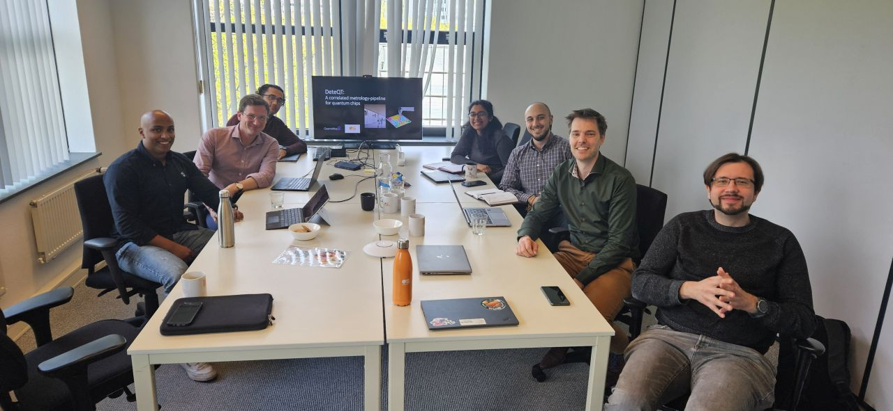

DeteQT kicks off

QuantaMap and Orange Quantum Systems join forces for the DeteQT project to develop a common platform for quantum chip diagnostics.
We kicked off DeteQT, our MIT R&D collaboration project, with a first in-depth technical discussion at Orange Quantum Systems' HQ. DeteQT aims to solve the critical need for advanced diagnostic and metrology tools for quantum chip production — the lack of which is increasingly becoming a bottleneck for chip development. Traditional metrology tools, crucial for semiconductor chip development, are ill-suited for quantum chips, which operate at cryogenic temperatures and are very sensitive to external disturbances.
QuantaMap and Orange Quantum Systems both offer systems for quantum chip diagnostics that overcome these limitations, each tailored to the quantum industry in a complementary way. Orange Quantum Systems is an expert in the electrical characterisation of quantum chips — they can quickly and accurately determine all key performance indicators of quantum chips once fully fabricated, but cannot locate the defect. Together, if the performance of a chip is not ideal, QuantaMap and Orange can identify where in the device the fault is and in which production step it was introduced.
By combining the unique and complementary expertise of both companies, the project aims to develop a common data architecture merging the performance metrics that Orange Quantum Systems can measure with the images of defect locations that QuantaMap can provide. The goal of DeteQT is an integrated platform that empowers quantum chip producers to collect diverse metrology and diagnostic data, accelerate development timelines, and enable precise quality tracking — all with API integration to Quantify.
Read more in our joint interview at EE Times.